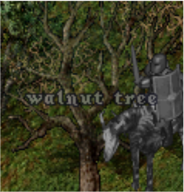

States/Actions
Data Type
Ultima Online is high level complex game consist of various components. Therefore, it is not possible to implement the current state recognized by the player only with basic data such as string, int, and float. Furthermore, action representation also requires a more complex form than basic data because the game basically receives action input from the mouse.
This data type is usually used to store the item of backpack, equipped by player, corpse of monster. Note that, this is the simpler than GrpcGameObjectData data type.


This includes the every object of game such as item, mobile, tree, rock, etc. This information can be used to find the obstacls that can block the movement of player on the screen.
This is simplied version of the GrpcGameObjectData that is made to reduce the size of data. For specific, it can be used to save the land object around the player to drop the item.


When the monster is dead, it is transformed from mobile to item type. Then, you can open the dead body of it. You can consider it as the container type. It can have the mutiple items what you can take to your backpack. This data type is for that purpose.
Due to the huge number of pixels, using the position of screen as action directly is really inefficient. However, we can project the any mouse input into a specific game event by using the multiple action arguments.
States
The base data type what we declare above section can be combined to represent the higher level game situation.
There are multiple part in player(Cloak, Shirt, Pants, Shoes, Legs, Arms, Torso, Tunic, Ring, Bracelet, Face, Gloves, Skirt, Robe, Waist, Necklace, Hair, Beard, Earrings, Helmet, OneHanded, TwoHanded, Talisman) where specific type of item can be equipped. This data type stores all equipped item at now.

Player has the main bag to hold the various items. This data type stors all items of player's backpack of now.

Opening the multiple corpse together is possible at Ultima Online. This data type can be used for that purpose.

This data type only stores the position of game object as list type. It is mainly used to store the Stactic object such as tree and rock that is not really important for player's decision.

This data type only stores the position of game object as list type. It is mainly used to store the Stactic object such as tree and rock that is not really important for player's decision.
The speech of NPC consists of multiple sentence even if it looks like a one sentence in game. Therefore, old cliloc text should be kept for a certain period of time(50 is default length)

It is possible to save the gold and item in bank. This state type stores the list of items when player open it.